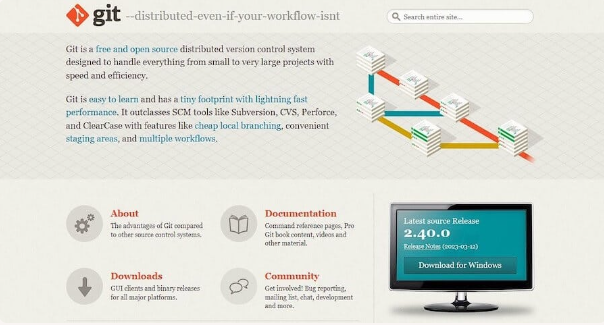
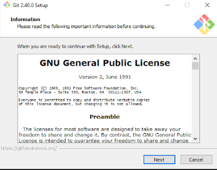
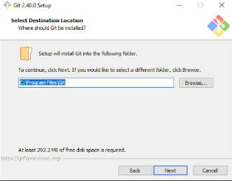
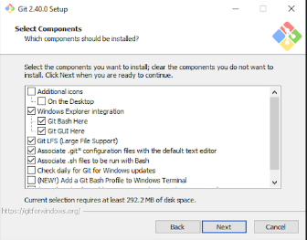
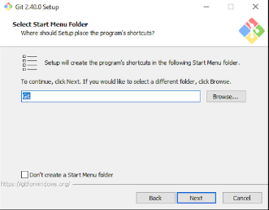
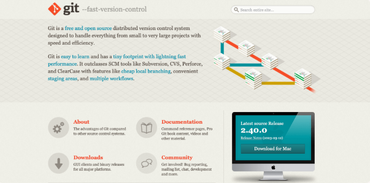

Git is a version control system that manages and keeps track of your code
Git was developed in 2005 by Linus Torvalds as open source software for tracking changes in a distributed version control system
Git is typically used by Software engineers.Git as a tool can be used to track changes in code and collaborate with other developers.
Version control systems are software tools that help software teams manage changes to source code over time. As development environments have accelerated, version control systems help software teams work faster and smarter.
Intalling Git on Windows is a fairly straightforward process and it involves the following steps
Go to the Git official website and download the latest version of Git for Windows
Click on the download link to download the Git installer
Run the installer and follow the steps in the installation wizard
Click on the next button to proceed with the installation
The installer will request an installation location.Keep the default unless you need to change it , and click Next
A component selection screen will be displayed.Keep the default settings unless you need to modify them , and click next
You will be prompted to create a start folder.Leave it as is and click Next
Choose the default editor used by Git and click Next
In this next step, you can opt to rename your initial branch. The default is master.
Now you’re on to modifying the PATH environment. Leave this on the recommended selection, Git from the command line and also from 3rd party software and click Next.
On the next screen, you need to pick the SSH program you want to use. Git does come with its own SSH client, so leaving the default settings checked is fine. Click Next
The following option concerns server certificates. The majority of users should choose the default, Use the OpenSSL library. Click Next.
The next screen deals with line ending conversions. Leave it set to the default option, Checkout Windows-style, commit Unix-style line endings. Changing this option might cause issues. Click Next
Next up, you’ll need to select the terminal emulator. The default MinTTY is recommended. Click Next.
On the next screen, you’ll be asked what the git pull command should do. Again, the default option is recommended. Click Next.
You’ll need to choose which credential helper to use next. Keep the default option selected and click Next.
Finally, you’ll be asked to enable file system caching. Leave the default option selected and click Install.
Open the command prompt and type the following command
git --version
If Git is installed correctly, you will see the version of Git that you installed
Installing Git on Linux is a fairly straightforward process and it involves the following steps
Open the terminal and type the following command
sudo apt-get updatesudo apt-get install git
Enter your password when prompted and Git will be installed
Open the terminal and type the following command
If Git is installed correctly, you will see the version of Git that you installed
Installing Git on Mac is a fairly straightforward process and it involves the following steps
Go to the Git official website and download the latest version of Git for mac
Click on the download link to download the Git installer
Run the installer and follow the steps in the installation wizard
Open the terminal and type the following command
If Git is installed correctly, you will see the version of Git that you installed
After installing Git, you need to configure it with your name and email address
Open the terminal and type the following commands
git config --global user.name "Your Name"git config --global user.email "Your Email"
Replace "Your Name" with your name and "Your Email" with your email address
After configuring Git, you can start using it to track changes in your code
To start tracking changes in your code, you need to initialize a Git repository
Open the terminal and navigate to the directory where your code is located
Run the following command to initialize a Git repository
git init
After initializing a Git repository, you can start tracking changes in your code
Use the following commands to add and commit changes to your code
git add .git commit -m "Initial commit"
After committing your changes, you can push your code to a remote repository
Use the following commands to add a remote repository and push your code
git remote add origin git push -u origin masterBefore you commit changes to your code, you need to add the files to the staging area
Open the terminal and navigate to the directory where your code is located
Use the following command to add files to the staging area
git add
Replace
After adding files to the staging area, you need to commit the changes to your code
Open the terminal and navigate to the directory where your code is located
Use the following command to commit changes to your code
git commit -m "Commit message"
Replace "Commit message" with a brief description of the changes you are committing
Branches in Git are used to work on different versions of the code
Creating a new branch allows you to work on new features without affecting the main codebase
Use the following commands to create a new branch and switch to it
git checkout -b
Replace
Branches in Git are used to work on different versions of the code
Creating a new branch allows you to work on new features without affecting the main codebase
Use the following commands to create a new branch and switch to it
git checkout -b
Replace
To view all branches in your Git repository, use the following command
git branch
This will display a list of all branches in your Git repository
To switch to a different branch in your Git repository, use the following command
git checkout
Replace
To merge a branch into the main codebase, use the following commands
git checkout mastergit merge
Replace
To delete a branch in your Git repository, use the following command
git branch -d
Replace
Now that you have a basic understanding of Git, you can start using it to track changes in your code
Here are some resources to help you learn more about Git
1. Git is a version control system that manages and keeps track of your code
2. Installing Git on Windows involves downloading the Git installer and running it
3. Configuring Git involves setting your name and email address git config --global user.email "Your email" , git config --global user.name "Your Name"
4. Initializing a Git repository involves using the git init command
5. Adding files to the staging area involves using the git add command
6. Committing changes involves using the git commit command
7. Creating a branch involves using the git checkout -b command
8. Viewing all branches involves using the git branch command
9. Switching active branches involves using the git checkout command
10. Merging a branch involves using the git merge command
11. Deleting a branch involves using the git merge command
12. Now that you have a basic understanding of Git, you can start using it to track changes in your code